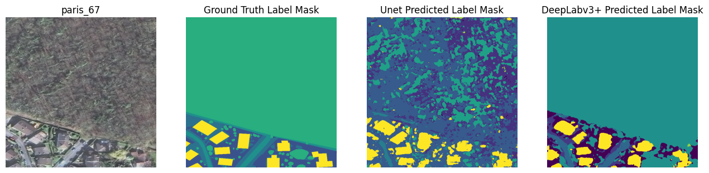

U-Net
A ground-up encoder-decoder implementation with skip connections, trained for 15 epochs in the recorded run.
DATA 5610 · COMPUTER VISION CASE STUDY
A study of U-Net and DeepLabV3+ for semantic segmentation of high-resolution satellite and aerial imagery, using OpenEarthMap.

01 / THE TASK
Instead of assigning one category to a whole image, semantic segmentation predicts a land-cover class for each pixel. The project uses OpenEarthMap, a global benchmark with 5,000 high-resolution images and manually annotated labels across 97 regions in 44 countries.
The dataset documents eight land-cover classes:
02 / APPROACH
GeoTIFF imagery and labels are loaded with Rasterio, resized to 512 × 512 pixels, and image values are normalized before inference. Both models are built and trained in TensorFlow.
A ground-up encoder-decoder implementation with skip connections, trained for 15 epochs in the recorded run.
A second segmentation architecture trained for 25 epochs in the recorded run; its prediction masks are compared against the same visual examples.
03 / RECORDED RESULTS
The notebooks record the following validation metrics at the indicated epochs:
| Run snapshot | Epoch | Dice | Mean IoU | Pixel accuracy |
|---|---|---|---|---|
| U-Net | 10 / 15 | 0.4911 | 0.3491 | 0.5846 |
| DeepLabV3+ | 25 / 25 | 0.3557 | 0.6060 | 0.7249 |
Interpret with care. These are validation log snapshots from separate runs, not a controlled head-to-head benchmark. The notebooks report no retained test pairs and use validation data for evaluation; the U-Net notebook also reports 365 of 500 validation pairs remaining. Metric implementations and usable samples differ, and the nine-channel configuration is unresolved. The values should not be read as held-out test or generalization performance.
04 / QUALITATIVE REVIEW
Visual comparisons make the failure modes easier to inspect than a single aggregate score:
These are qualitative observations from selected notebook examples, not a systematic error analysis.
05 / SOURCE MATERIAL
Dataset citation: Xia, J., Yokoya, N., Adriano, B., & Broni-Bediako, C. (2022). OpenEarthMap: A Benchmark Dataset for Global High-Resolution Land Cover Mapping. Zenodo. https://doi.org/10.5281/zenodo.7223446. This Paris imagery example is adapted from Maxar via SpaceNet under CC BY-SA 4.0. Source imagery licensing varies by region; consult the official source attribution before reuse.